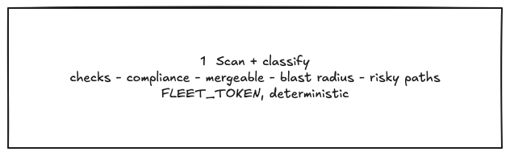
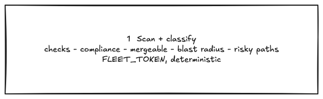
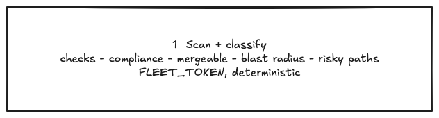

Mermaid → Excalidraw label line breaks
Live-deck reproduction after the fix. The three-line Scan + classify node keeps real line breaks. Adjacent words are not fused, and the Excalidraw box sizes to the line set.
Live-deck label with <br> breaks
PASS: three real lines, no classifychecks / pathsFLEET_TOKEN, box 459×60 inside container 612×174
1. 1 Scan + classify 2. checks - compliance - mergeable - blast radius - risky paths 3. FLEET_TOKEN, deterministic

Same label with <br/> breaks
PASS: three real lines, no fused words, box 459×60 inside container 612×174
1. 1 Scan + classify 2. checks - compliance - mergeable - blast radius - risky paths 3. FLEET_TOKEN, deterministic

Same label with \n breaks
PASS: three real lines, no fused words, box 459×60 inside container 612×150
1. 1 Scan + classify 2. checks - compliance - mergeable - blast radius - risky paths 3. FLEET_TOKEN, deterministic
